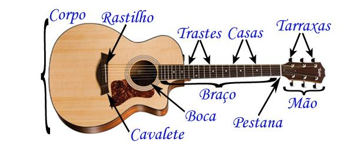
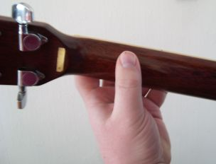

1° PASSO – Aprendendo as partes
É muito importante você saber o nome das partes principais do seu instrumento antes de aprender qualquer outra coisa. Vou te mostrar as 3 partes mais importantes por agora.
Partes do violao
Mão: Aqui se encontram as tarraxas do violão. A mão do violão também é conhecida como "headstock".
Tarraxas ou Cravelhas: Podem ser metálicas ou de madeira e se encontram na "mão" do violão. São elas que permitem o controle da tensão aplicada a cada corda. É esticando ou afrouxando as tarraxas que afinamos o violão. As tarraxas blindadas são as mais comuns hoje em dia e não precisam de manutenção.
Pestana ou Nut: Podem ser feitas de vários materiais sendo que os mais comuns são osso, plástico e metal. A pestana determina o espaço entre cada corda, serve como guia para que as cordas cheguem corretamente às tarraxas e também influencia na altura das cordas.
Escala ou espelho: É essa lamina de madeira mais escura no braço do violão que serve para sustentar os trastes.
Trastes: São barrinhas de metal dispostas ao longo do braço do violão na região da escala. Eles indicam exatamente onde uma nota deve ser tocada.
Casas: São os espaços entre os trastes. É nessa região que pressionamos para produzir os sons das notas. Cada casa tem seis notas, uma para cada corda.
Marcações: São as bolinhas em algumas casas da escala e servem para nos guiar no braço do violão. Enquanto alguns violões não tem marcações outros tem marcações na parte frontal e lateral do instrumento.
Rastilho: Assim como a pestana também pode ser feito de vários materiais sendo os mais comuns também o osso, o plástico e o metal. Ele apoia as cordas e ajuda na regulagem de suas alturas em relação ao braço do violão.
Cavalete: Serve para fixar as cordas e de suporte para o rastilho.
Corpo: A madeira é o material mais comum na confecção dos violões e podem ser usados vários tipos de madeira num mesmo violão. O formato e a madeira utilizada na confecção do corpo vão interferir na sonoridade do instrumento. As madeiras utilizadas também podem ser maciças ou laminadas. As maciças garantem melhor sonoridade mas também encarecem o instrumento.
Boca: É esta abertura no corpo do violão responsável pela projeção do som.
Cutaway: É o corte na lateral de alguns violões. Ele facilita o acesso às casas mais agudas próximas a boca.
Cordas: Podem ser de aço ou nylon. No violão de nylon as seis cordas são de nylon sendo que as três mais grossas podem estar revestidas com aço.
Equalizador: Ajusta o áudio quando o instrumento está ligado à uma caixa de som.
Tensor: É uma haste localizada dentro do braço do violão. Ele pode ser de metal, fibras de carbono ou madeira rígida. O tensor reforça o braço para que ele sofra menos com a tensão das cordas e ajusta a curvatura para facilitar a regulagem.
2° PASSO – Como segurar o Violão
Para segurar o violão corretamente, sente-se reto na cadeira e coloque o corpo do violão sobre sua perna direita. O corpo do violão tem que estar encaixado em sua perna.
Agora repouse seu braço direito em cima da maior dobra do corpo do violão, de um modo que seu antebraço possa se movimentar com facilidade.Veja a demonstração abaixo.
Atenção: O violão tem que ficar reto, e não deitado. Esse é um erro comum que a maioria dos iniciantes cometem.
3° PASSO – Posicionamento da mão esquerda
Para ficar mais simples, faça um “C” com sua mão esquerda e encaixe-a no braço do violão. O polegar vai ficar atrás do braço, o mais em pé possível, mantendo o resto dos dedos o mais curvado possível no braço do violão. Veja a imagem abaixo para você entender: 
Deseja receber nosso pacote completo para o curso de violão? então não perca tempo cadastre-se.
Comentários
Top Marcas